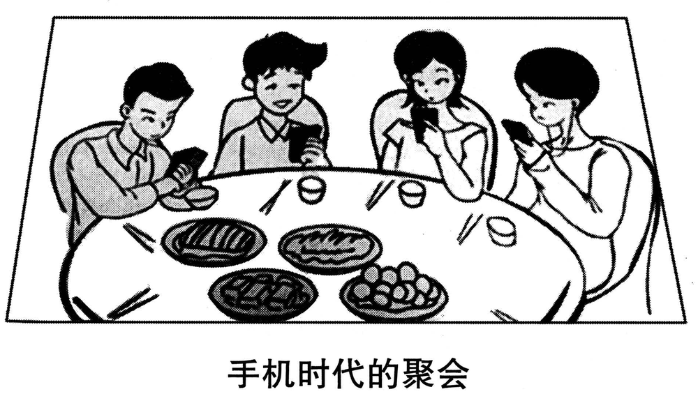

A小作文 · 主持读书会，给会员写邮件推荐一本书（10 分）
You are going to host a club reading session. Write an email of about 100 words recommending a book to the club members.
You should state reasons for your recommendation.
You should write neatly on the ANSWER SHEET.
Do not sign your own name at the end of the letter. Use “Li Ming” instead.
Do not write the address. (10 points)
💭 审题三件事
- ⭐⭐ 这本书是推荐给「一群要一起读、到会上一起谈」的人。2011 推给一个朋友，他自己看；2015 推给一个读书会，大家要在同一段时间里读完、再坐下来讨论。⟹ 理由要对着这个用途说：一本适合一个人静静读的书，不一定适合一次读书会。最省事的切法是两问——① 大家读得完吗？② 读完了，会上有得谈吗？
- ⭐⭐ 2011 最贵的一步是「转向你」（指认收信人的处境）；本年读者是一群人，没有一个人的处境可挂 ⟹ 这一步换成「转向我们那晚」：抛一个大家会答得不一样的问题，请每个人带着答案来。这一句一出，「推荐」就变成了「主持」——题干给你的身份正是 host。
- 情节最多一句，而且不许剧透结局（2011 的纪律，本年更要紧）：剧透了，会上就没得谈了——推荐的目的当场自毁。口吻是 we / us（主持人代表整个读书会说话），别通篇 I；末句给会期 ＋ 动作。
⭐⭐ 十年 Part A 十种读者（体裁第三次重样：2015 撞 2011）
| 年份 | 体裁 | 读者是谁 | 第一句怎么起 | 落款 | 本年特有的坑 |
|---|---|---|---|---|---|
| 2007 | 建议信 | 校图书馆（机构） | I am writing to put forward several suggestions … | Li Ming | 建议只有口号没有可执行动作；写成投诉信 |
| 2008 | 道歉信 | 具名熟人 Bob | I am writing to apologize for … | Li Ming | 只道歉不给方案；方案没有「动作＋方式＋时间」 |
| 2009 | 致编辑信 | 报社编辑 | I am writing to express my concern about … | Li Ming | 建议里没有一条是编辑自己能办的 |
| 2010 | 通知 NOTICE | 一群人（无称呼） | Volunteers are needed for … | 机构名 | 写 Dear ＝ 体裁错；落款签 Li Ming |
| 2011 | 推荐信 · 荐物 | 未具名的一个朋友 （名字自己起） | How have you been? I am writing to recommend … | Li Ming | 写成影评／剧透结局；通篇只有「我」没有「你」 |
| 2012 | 欢迎邮件 （以组织名义） | 一群人（国际学生） 但仍是书信 | On behalf of the Students’ Union, I would like to extend a warm welcome to … | Li Ming ＋ Students’ Union | 按 2010 的手感写成通知；通篇 I 没有 we；Welcome you to … |
| 2013 | 邀请邮件 （请人担任角色） | 本校外教（给身份、不给名字） | As chair of the English Club, I am writing to invite you to serve as a judge for … | Li Ming | 只邀请、不交代工作量；Dear foreign teacher；没给答复期限 |
| 2014 | 建议信 （第二次，撞 2007） | 本校校长——握着权限的个人 | As a third-year student, I am writing to suggest how our university might improve … | Li Ming | 建议写成对学生的劝告；用 should 给校长下指令；Dear Headmaster |
| 2015 本题 | 荐书邮件 （荐物第二次，撞 2011） | 读书会的一群会员——要一起读、一起谈的人 | As host of next Friday’s reading session, I would like to recommend … | Li Ming | ⭐ 理由只说「书好」，不说「为什么适合这次读书会」；剧透结局；通篇 I 没有 we；Dear Sir or Madam |
| 2022 | 邀请邮件 | 英国大学的教授 | On behalf of …, I am writing to invite you to … | Li Ming | 漏时间/地点/事由；不说明「为什么请你」 |
- ⭐ 2012 页定的四问：① 体裁词（email ⟹ 有 Dear）② 读者是谁——⭐ 2014 多问「他手里有什么权限」，2015 多问「他们拿这本书去做什么」：一起读、一起谈 ⟹ 理由对着这件事；③ 以谁的名义（题干给了：host）；④ Do not sign ⟹ Li Ming。
- ⭐⭐ 珍藏版两年、两次回头：2014 回到 2007 的建议信，2015 回到 2011 的推荐信。两次都是「体裁一样、读者一换，要写的内容几乎没有交集」——2011 荐给一个人，理由挂到他的处境；2015 荐给一群人，理由挂到那一晚的讨论。⟹ 押体裁没用，第三次得到验证。
- ⚠️ 身份句本年题干直接给（You are going to host …）：十年里题干直接交代「你是谁」的还有 2008（刚从加拿大回来）、2010（替研究生会写）、2012（以学生会名义）——给了就用在第一句，没给再看要不要补（2013 补 As chair of …、2014 一句 As a third-year student）。
⭐⭐ 同是荐物：2011 荐给一个朋友 vs 2015 荐给一个读书会（本页新增）
体裁名词决定格式，读者拿这件东西去做什么决定理由。把两年的理由对调着写，两年都会掉档。
| 对照项 | 2011 · 给一个朋友推荐电影 | 2015 · 给读书会会员推荐一本书 |
|---|---|---|
| 读者 | 一个人，名字自己起 | 一群人，要在同一段时间读完、再坐下来谈 |
| 称呼 | Dear Tom, | Dear fellow members,（复数身份） |
| 这件东西拿去做什么 | 他自己看 | ⭐ 大家一起读、会上一起讨论 |
| 理由一 | 外层：可公开验证的好（表演、拍法） | 读得完：篇幅、语言对所有会员都可行 |
| ⭐ 理由二 | 内层：它对我起过什么作用 | 谈得开：它会让大家答得不一样 |
| ⭐⭐ 最贵的一步 | 转向你：指认收信人的处境（You told me last month …） | 转向我们那晚：抛一个问题，请每人带着答案来 |
| 情节 | 最多一句，不剧透 | 最多一句，不剧透——剧透了会上就没得谈 |
| 人称 · 收尾 | I → you；约他周六一起看 | I → we；会期 ＋ 带着答案来 |
⚠️ Directions 限定词清算表（开考先圈出来）
| 限定词 | 它约束什么 | 违反的后果 |
|---|---|---|
| You are going to host a club reading session | ⭐ 身份给了：主持人 ⟹ 第一句用；are going to ⟹ 会在后头，末句给会期 | 以普通会员口吻写「我最近读了一本好书」——丢了主持人身份，也丢了「这次会读什么」 |
| an email … the end of the letter | 书信格式：称呼 ＋ 正文 ＋ 结尾 ＋ 落款（首句 email、末句 letter，同 2012） | 写成通知（无称呼、落款写 Reading Club） |
| recommending a book | 只推一本 | 一口气推三本，理由摊薄，会上也没法谈 |
| to the club members | 读者＝一群会员 ⟹ Dear fellow members；通篇 we / us | ❌ Dear Sir or Madam · ❌ Dear member（单数）· 通篇只有 I |
| state reasons | ⭐ 复数，至少两条且不同质；state ＝ 摆明，一条一两句，不用长篇论证 | 两条都是「很有名、很感人」（＝一条）；或一条理由写成半篇书评 |
| （本年没有 include the details …） | ⚠️ 2013、2014 连续两年都有，本年断了 ⟹ 会期地点不是要点 | 时间、地点、带什么、几点签到写一大段，理由只剩一句 |
| of about 100 words | 95–115 最稳 | 复述情节写到 150 |
| Do not sign … Use “Li Ming” instead Do not write the address | 落款 Li Ming；不写地址 | 签真名有判零风险 |
🧩 两条理由怎么切：读得完 × 谈得开（本页新增）
2011 的切法是「一外一内」（公开的好 ＋ 我的经历）。本年读者拿书去开会，切法跟着用途换：每条理由回答会员心里的一个疑问。
| 层 | 回答会员哪个疑问 | ❌ 弱理由 | ✅ 本文写成了哪一句 |
|---|---|---|---|
| ① 读得完 | 两周读得完吗？英文读得动吗？ | It is a world-famous classic. | First, it is short enough to finish in a few evenings, and its plain sentences are easy going even for those of us still building our English. |
| ② 谈得开 | 读完了，会上有话说吗？ | It is very interesting and moving. | More importantly, it gives us something to argue about. |
| ⭐⭐ ③ 转向我们 | 我该带着什么来？ | I hope you will like it. | Since no two readers follow quite the same track, please come with your answer to one question: did he win or lose? |
- ⭐ 短：一次会期之间读得完——长篇巨著（整部《红楼梦》）写进读书会邮件，第一条理由就立不住。
- ⭐⭐ 有得争：结局或主人公能让人答出两种答案——第三步的那个问题就从这里来。
- ⭐ 你真读过：书名、作者、一句情节要写对。书名手写加下划线或加引号，实词首字母大写（本页用斜体代替下划线）。备选：Animal Farm（问：农场是从哪一天开始变坏的？）· 余华《活着》To Live（问：福贵幸运还是不幸？）· The Little Prince（问：大人为什么看不懂那幅画？）。
✍️ 范文（ 词 · 🟡 亮点点击看讲解）
Dear fellow members,
身份 ＋ 推荐对象As host of next Friday’s reading session, I would like to recommend The Old Man and the Sea by Ernest Hemingway.
理由一 · 读得完First, it is short enough to finish in a few evenings, and its plain sentences are easy going even for those of us still building our English.
理由二 · 谈得开 ＋ 转向我们More importantly, it gives us something to argue about. An old fisherman hooks the biggest fish of his life, alone and far out at sea; what he brings home, I will leave you to find out. Since no two readers follow quite the same track, please come with your answer to one question: did he win or lose? See you all on Friday!
Best wishes,
Li Ming
作为下周五读书会的主持人，我想向大家推荐欧内斯特·海明威的《老人与海》。
第一，它篇幅不长，几个晚上就能读完；句子平白，就算是英语还在打基础的会友，读起来也不吃力。
更重要的是，它能让我们争上一争。一位老渔夫独自远航深海，钓到了他平生最大的一条鱼；至于他最后带回了什么，就留给大家自己去读。每个人读书走的路都不尽相同，所以请大家带着对一个问题的答案来：他是赢了，还是输了？周五见！
祝好
李明
- ⭐⭐ 要点理由只说「书好」：It is a famous classic / It is very moving。题干让你主持一次读书会——理由要回答「为什么这次会读它」：读得完吗？会上有得谈吗？
- ⭐⭐ 要点剧透结局：… but in the end the sharks eat the fish and he comes home with only the skeleton。剧透了，会上的问题就没有答案可争了——推荐的目的当场自毁。情节最多一句，停在结局之前。
- ⭐ 要点只有一条理由，或两条同质（有名 ＋ 经典）。state reasons 是复数。
- 称呼❌ Dear Sir or Madam,（写给机构才用）· ❌ Dear member,（单数）· ❌ Dear all members, ⟹ ✅ Dear fellow members, ／ Dear members of the Reading Club,
- 人称通篇 I think / I like：主持人代表整个读书会说话 ⟹ us / we / our（it gives us something to argue about · those of us）。
- 格式书名：手写加下划线或引号，实词首字母大写（The Old Man and the Sea——夹在中间的连词 and、冠词 the 小写）；❌ the old man and the sea（全小写）。
- 语言❌ I recommend you to read …（recommend 不接 sb to do）⟹ ✅ I would like to recommend … / I recommend that we read …
- 字数about 100 词：95–115 最稳。本文 词（不含称呼与落款）。
- ⭐ 第一句用上题干给的身份：As host of next Friday’s reading session——host 照抄题干，next Friday’s 顺手交代了会期，一个所有格省下一整句通知。
- ⭐ 书名 ＋ 作者一次给全：The Old Man and the Sea by Ernest Hemingway——by 引出作者，别写 written by Hemingway 多两个词。
- ⭐⭐ 理由一落在「我们」身上：easy going even for those of us still building our English——读书会里水平不一，主持人要替最吃力的那几位说话；those of us 把自己也算进去，不居高临下。
- ⭐⭐ 理由二只用一句定性：it gives us something to argue about——argue about 比 discuss 更有劲：好的读书会不是交读后感，是争。
- ⭐ 情节一句，分号前给钩子、分号后收住：… hooks the biggest fish of his life …; what he brings home, I will leave you to find out.——宾语前置（what he brings home 提到句首），把悬念放在最显眼的位置，又一个字不剧透。
- ⭐⭐ 借 2015 新题型的 same track：原文 comprehension will not follow exactly the same track for each reader ⟹ Since no two readers follow quite the same track——同卷的阅读给了「为什么值得一起谈」的理由：每人读法不同，放到一张桌上才有意思。
- ⭐⭐ 问题只有四个词：did he win or lose?——冒号后直接给问题，比 I hope we can discuss whether … 利落；二选一的问题人人答得出、又人人答得不一样。
- 末句 See you all on Friday!——会期第二次出现，给一个动作；落款 Best wishes（会友之间，不必 Yours sincerely）。
B大作文 · 图画作文（20 分）
Write an essay of 160–200 words based on the following picture. In your essay, you should
1) describe the picture briefly,
2) interpret its intended meaning, and
3) give your comments.
You should write neatly on the ANSWER SHEET. (20 points)

- 一张圆桌，远侧坐着四个年轻人，肩挨着肩——挤得很近。
- 四颗头全低着，各看各的手机：左一双手捧着手机；左二一只手举着手机；左三把手机抵在下巴处；左四一手拿手机、一手托着腮。
- ⚠️⚠️ 表情不一样：左一眼睛弯着、在笑；左二咧着嘴笑；左三嘴角微翘；左四面无表情。笑的那几个，笑都冲着自己的屏幕。
- 桌上四盘菜是满的（一盘条状、一盘炒菜、一盘块状、一盘丸子）；每一双筷子都搁在桌面上，杯子没人碰——饭还没开始吃。近侧桌边也摆着筷子，那一侧的座位在画框外。
- ⚠️ 没有一道视线横过桌面：四个人谁也没看谁，也没看菜。
- 图下方图注：「手机时代的聚会」——没有引号；Directions 本年用的是 picture（2007–2014 都是 drawing），写 picture／cartoon 都行。
💭 审题：图注的中心语是「聚会」——聚了，没会上
- 先看到手机：四个人都在低头看手机——主题送到手上：低头族、手机依赖、人际疏离。这一步谁都看得出，只够三档。
- ⭐⭐⭐ 再拿图注的语法核对：「手机时代的聚会」是偏正短语——「手机时代」是定语，交代背景；「聚会」是中心语，才是话题。⟹ 这篇文章写的是聚会，不是手机。再拆「聚会」两个字核对画面：聚——肩挨肩、同一张桌，发生了；会——没有一双眼睛碰上另一双，没发生。⟹ 这是一场只发生了一半的聚会。这就是题眼，也是第二段的第一句。
- ⭐⭐ 再看最反常处：有两个人在笑。聚会上有人笑不反常，反常的是笑冲着屏幕。⟹ 他们不冷漠——他们正热络着，只是热络在别处：手机那头有人。⟹ 近在咫尺的人远了，远在天边的人近了——这正是 2009 那张蛛网的「近」与「远」（见下方重样对照）。⟹ 第二段三步：① 只发生了一半 → ② 笑告诉你另一半去了哪 → ③ 人还坐在桌边，心已经「回家」了。
- 「手机时代的聚会」✅ “A Gathering in the Age of Mobile Phones”（中心语 gathering 放前面，时代作后置定语——英文语序正好把话题顶到句首）· 可用 “Dinner Party in the Smartphone Era”。❌ “Mobile Phone Times’ Party”（中式定语前置、times 有歧义）· ❌ “A Meeting in …”（meeting ＝ 会议）。
- 「聚会」✅ gathering ／ get-together（朋友小聚）· dinner party（贴图上的饭局，但 party 偏派对）。⚠️ 中文「聚」「会」能拆，英文 gathering 拆不开 ⟹ 第二段别写 “the word ‘gathering’ has two parts”，用 bodies / eyes 两个名词把两半写出来（见范文）。
📐 描图段三看（本图版 · 群像图要一个一个人看过去）
| 看什么 | 本图看出来的 | 写进文章的哪一句 |
|---|---|---|
| ① 看图上的字 | 图注「手机时代的聚会」——偏正短语，中心语是聚会 | The caption reads “A Gathering in the Age of Mobile Phones”. |
| ② 看最反常处 | ⭐⭐ 有人在笑——冲着屏幕笑；菜是满的、筷子都放着 | Two of them are smiling, but at their screens, not at one another. |
| ③ 看动作方向 | 四颗头全朝下、各朝各的手；没有一道视线横过桌面 | Yet no one is eating or talking: each head is bent over a phone. … not a single pair of eyes meets another. |
⭐⭐ 群像图第二问：人与人之间的差别在哪（本页新增 · 接 2013）
2013 页定下「群像图先看人与人之间有没有差别」。2015 的差别刚好反过来：2013 人一模一样、路不一样；2015 人各不一样，动作一模一样——而且表情的差别还藏着一条线索。
| 看哪一项 | 四个人之间 | 写不写、写在哪 |
|---|---|---|
| 长相 · 衣着 | 各不相同（四种发型、四样衣领） | 不必逐个描——四个不同的人，一个 four young people 就够 |
| ⭐⭐ 动作 | 完全一样：低头、看手机 | 必写：each head is bent over a phone——四个不同的人被同一个动作拉成了一个样 |
| ⭐⭐⭐ 表情 | 两个在笑、一个嘴角微翘、一个面无表情 | 必写：笑冲着屏幕 ⟹ 第二段拿它回答「另一半聚会去了哪」 |
| ⭐ 视线 | 全朝下，没有一道交汇 | 第二段 not a single pair of eyes meets another |
| 桌面 | 四盘菜是满的、筷子都放着 | 第一段一句：dishes sit untouched, chopsticks lie where they were laid |
- ⭐⭐ 2014「相携」：两格四个人全在笑，笑对着彼此 ⟹ 那一句 Across thirty years, the smiles have not changed. 证明的是陪伴。
- ⭐⭐ 2015「聚会」：也有人在笑，笑对着屏幕 ⟹ 证明的是缺席：人在这儿，笑给了别处。
- ⟹ 描表情不只写「笑没笑」，还要写「冲着谁笑」——同样一个 smile，朝向一换，意思正好相反。
🧩 图上字的语法结构，决定文章的论证结构（八型扩到九型：新增「偏正短语：X 时代的 Y」）
| 年份 | 图上的字是什么结构 | 文章就得怎么搭 |
|---|---|---|
| 2007 | 无字，只有两个想象气泡 | 靠对比两个气泡立意 |
| 2008 | 因果句：你一条腿，我一条腿；你我一起，走南闯北 | 顺着因果推。单线论证 |
| 2009 | 对举短语：网络的“近”与“远” | 两边都写，还要回答为什么同一个东西既近又远 |
| 2010 | 比喻式判断句：文化“火锅”：既美味又营养 | 先解喻，再分别落实两个并列谓语 |
| 2011 | 引号双关式短语：旅程之“余” | 破字 → 对照句 → 指认施动者 |
| 2012 | 两句对白：全完了！／幸好还剩点儿。 | 转述 → 拿画面核对真假 → 看手 |
| 2013 | 一词图注 ＋ 并列标签：选择 ／ 求职·考研·出国·创业 | 全译 → 不排座次 → 追问谁来选 |
| 2014 | 两格时间标签 ＋ 一词图注：三十年前…… ／ 现在…… ／ 相携 | 两格同构描 → 列变与不变 → 在两格之间解图注 |
| 2015 本题 | 偏正短语：手机时代的聚会（定语「手机时代」＋ 中心语「聚会」） | ⭐ 三步走：① 描图时中心语照译、定语后置；② ⭐⭐ 第二段写中心语（聚会）在定语（手机时代）里变成了什么——拆开中心语，看哪一半还在、哪一半没了；③ ⭐ 评论的矛头别指向定语：时代是背景，回不去，也不是被告 |
| 2022 | 对话：两名学生就要不要听讲座的两句话 | 转述两句对话并选边站 |
⭐⭐⭐ 十年里第一次大作文主题重样：2009 蛛网 vs 2015 饭桌（本页新增）
2009 画的是互联网让人「近而远」；六年后 2015 把同一个主题画成了一张具体的饭桌。更巧的是，本站 2009 范文的末句 whatever can be said at a table should not be typed on a screen 写的正是这张桌子。
| 对照项 | 2009 · 网络的“近”与“远” | 2015 · 手机时代的聚会 |
|---|---|---|
| 画法 | 象征：一张巨大的蛛网，每个网眼里坐一个人 | 写实：一张圆桌、四个朋友、四部手机 |
| 图注结构 | 对举短语，引号标出「近」「远」 | 偏正短语，无引号，中心语「聚会」 |
| ⭐ 「远」在哪 | 网眼之间的粗丝像一道道墙 | 一臂之隔——肩挨着肩，视线却一道都没交汇 |
| ⭐ 「近」在哪 | 一键之遥的上千「好友」 | 屏幕那头——两个人正冲着它笑 |
| ⭐⭐ 题眼 | 那对引号：同一根丝既连又隔 | 中心语：聚会只发生了一半；笑的朝向 |
| 第二段第一句 | The web, of course, is the Internet. | Only half of the gathering has taken place. |
- ⭐⭐ 背过 2009 范文的人，第二段能搬过来的只有一句机制（网上交换的是碎片、不是共同经历）；2015 的题眼——「聚会只发生了一半」「笑冲着屏幕」——必须回到这张图上才找得到。⟹ 押主题没用，背整篇更没用；背的是「怎么看图」。
- ⭐ 2009 抽象、2015 具体：抽象图要先解喻（网＝互联网），具体图不用解喻，但要找「哪一处和名字对不上」——本图名字叫聚会，画面里没有一个人在跟别人聚。
| 年份 | 现成联想 | 回画面查一遍 | 结论 |
|---|---|---|---|
| 2009 | 蛛网 ⟹ 陷阱 | 图里没有蜘蛛 | ❌ 联想错 |
| 2010 | 火锅 ⟹ 熔炉 | 每块料都还保留形状和名字 | ❌ 联想错 |
| 2011 | 河脏 ⟹ 工厂排污 | 图上没有工厂 | ❌ 联想错 |
| 2012 | 半杯水 ⟹ 乐观 vs 悲观 | 瓶里确实还剩、两人确实相反 | ✅ 成立，但少了那只手 |
| 2013 | 岔路口 ⟹ 选对那条路 | 四条路没被标出对错 | ⚠️ 半成立：隐含前提找不到 |
| 2014 | 子女扶老人 ⟹ 反哺／报恩 | 母亲在自己走、在笑 | ⚠️ 半成立：程度过了量 |
| 2015 本题 | 低头族 ⟹ 「手机成瘾、伤身体 ⟹ 远离手机」 | 现象成立（四个人确实都在看手机）；但没有一个人显得痛苦——两个在笑；受损的不是谁的颈椎和眼睛，是这一桌人之间；图注的中心语是聚会，不是手机 | ⚠️ 半成立：现象对，靶子错——该批评的是「饭桌上把注意力交给了谁」，不是手机这件东西 |
- ⭐⭐ 规矩再补一句：查模板时，也查它的「靶子」。「手机有害」把矛头指向一件东西；画面指向的是一个选择——同一部手机，饭后看就没事。靶子一错，第三段就只剩「少玩手机」的口号（跑题①④）。
- ⭐ 七年这把尺子量出了三种结果、三次半成立，而且三次缺的都不一样：错（2009–2011）· 成立但不够（2012）· 半成立（2013 缺前提 · 2014 过了量 · 2015 打错了靶）。动作始终只有一个：回画面查。
✍️ 范文（ 词 · 🟡 亮点点击看讲解）
①描图Four young people sit shoulder to shoulder at a round table. Four dishes sit untouched, and every pair of chopsticks lies where it was laid. Yet no one is eating or talking: each head is bent over a phone. Two of them are smiling, but at their screens, not at one another. The caption reads “A Gathering in the Age of Mobile Phones”.
②寓意Only half of the gathering has taken place. Their bodies have come together, close enough to touch, but not a single pair of eyes meets another. Those smiles belong to someone else, somewhere else. If exploring a smartphone is more like entering someone’s home, as one writer puts it, then all four have gone home without leaving the table.
③评论In my view, the phones are not to blame; the choice is. The people on the other end are real, but so are those within arm’s reach, and only the latter came to share this meal. A simple rule would help: phones stay face down until the dishes are empty. A meal can be shared online with a hundred people, but it can only be eaten with the few at the table.
这场聚会只发生了一半。他们的身体聚到了一起，近得伸手就能碰到，却没有一双眼睛碰上另一双。那几张笑脸，属于别处的别人。如果真像有人说的那样，翻看一部智能手机更像是走进一个人的家，那么这四个人都没离席，却都已经回家了。
在我看来，该怪的不是手机，是选择。屏幕那头的人是真实的，伸手可及的这几个人也一样真实，而只有后者是来分享这顿饭的。一条简单的规矩就能帮上忙：菜没吃完之前，手机一律扣在桌上。一顿饭可以在网上和一百个人分享，却只能和桌边这几个人一起吃。
🔁 一图三写：同一幅图，第三段的三个版本
前两段一个字不动，只换第三段——按 Directions 第 3 条的动词选版本。点一下卡片可以高亮对照。
- ⭐⭐ 立意写成手机伤身：Using mobile phones for long hours harms our eyesight and neck … radiation …。图上没有一个人不舒服——受损的是这一桌人之间，不是谁的身体。
- ⭐⭐ 立意写成「科技是双刃剑」：On the one hand, mobile phones make life convenient; on the other hand … 。图注的中心语是「聚会」，利弊各半等于没回答「这场聚会怎么了」，还各打五十大板（2012 的雷区）。
- ⭐ 立意把矛头指向手机本身：We should stay away from mobile phones / go back to the days without them。图注写明了「手机时代」——时代是背景，回不去；该改的是饭桌上的选择。
- ⭐ 描图漏掉笑：只写 they are all looking at their phones。笑是本图最值钱的细节——它告诉你「会」去了哪。也漏掉菜：满盘的菜、放着的筷子证明饭还没开始吃。
- 语言❌ play mobile phone（play 不能直接接 phone）⟹ ✅ be on / check / scroll through one’s phone · ❌ low-head tribe ⟹ ✅ people glued to their phones（phubber 是新造词，用了要解释）· ❌ A Meeting in …（meeting ＝ 会议）。
- 语气批判年轻人冷漠：Nowadays young people are indifferent to each other …。画上两个人在笑——他们不冷漠，只是热络在别处；「冷漠」两个字和画面对不上。
- 要点第三段只有口号：We should put down our phones and cherish the time with friends。要落到一条能照做的规矩（扣在桌上 · 篮子 · 起身去回），或一个机制。
- 字数160–200：190–198 最稳。本文 词。
- ⭐ 头两句同构：Four young people sit shoulder to shoulder at a round table. Four dishes sit untouched …——两句都以 Four 开头、都用 sit：人坐着，菜也「坐」着，谁都没动；shoulder to shoulder 先把「近」写足，第二段的「远」才有对比。
- ⭐ 桌面两句证明「饭还没开始」：Four dishes sit untouched, and every pair of chopsticks lies where it was laid——不写 the food has gone cold（黑白图看不出冷热，写了就是编）。
- ⭐⭐ Yet 一转、冒号一解：Yet no one is eating or talking: each head is bent over a phone——冒号前是「没有」，冒号后是「为什么没有」。
- ⭐⭐ 描笑写朝向：but at their screens, not at one another——介词 at 把笑的方向写死，第二段那句 belong to someone else 就有了依据。
- ⭐⭐⭐ 第二段第一句就拆中心语：Only half of the gathering has taken place——聚会只发生了一半；下一句用 bodies ↔ eyes 两个名词把「聚」和「会」分开（英文拆不开 gathering 这个词，就拆身体部位）。
- ⭐ someone else, somewhere else：Those smiles belong to someone else, somewhere else——两个 else 叠用，人和地方都不在这张桌上。
- ⭐⭐ 借 2015 T2 的比方：原文 But exploring one’s smartphone is more like entering his or her home. ⟹ if … as one writer has put it, then all four have gone home without leaving the table——把一篇讲隐私的社论里的比方转成「人在桌边、心已回家」；as one writer puts it 交代出处又不必写报名。
- ⭐⭐ 第三段第一句改靶子：the phones are not to blame; the choice is——分号前否掉现成联想，分号后立自己的靶，省略了 to blame（the choice is to blame）。
- ⭐ 先让一步再收回：The people on the other end are real, but so are those within arm’s reach, and only the latter came to share this meal——so are 倒装承认两边都真实，the latter 把砝码放回桌边。
- ⭐⭐ 末句 shared ↔ eaten：A meal can be shared online with a hundred people, but it can only be eaten with the few at the table.——同一顿饭、两个动词，一个是屏幕上的，一个是桌上的；a hundred ↔ the few 数字对举。
03🩺 跑题诊断表（这幅图最容易滑向的五个方向）
手机是人人有话说的题——越有话说，越容易顺着现成的那套说下去。下面五条按「有多容易滑过去」排序，①和②是本图特有的。
| 跑向 | 长什么样 | 为什么错 | 回到正轨的那一句 |
|---|---|---|---|
| ① 写成手机伤身 本图特有 | Staring at phones for hours damages our eyesight and neck, and the radiation … | ⚠️⚠️ 图上没有一个人不舒服——两个在笑；受损的是这一桌人之间。「手机有害」这个现成联想用在身体上，就一路滑到这里 | Only half of the gathering has taken place. |
| ② 写成「科技是双刃剑」 本图特有 | On the one hand, mobile phones make our life convenient; on the other hand, … | ⚠️ 把定语当成了中心语：图注的话题是「聚会」，利弊各半等于没回答「这场聚会怎么了」；还各打五十大板（2012 的雷区） | In my view, the phones are not to blame; the choice is. |
| ③ 写成青少年沉迷 | More and more teenagers are addicted to mobile games, and parents and schools should … | 图上是一群成年朋友在聚餐，不是学生在教室；主角一换成「青少年 ＋ 家长学校」，就离开了这张桌子 | The people on the other end are real, but so are those within arm’s reach … |
| ④ 呼吁远离手机 | We should put away our phones and go back to the good old days … | 图注写明了「手机时代」——这是前提，不是被告；时代回不去，要改的是饭桌上的一个选择 | A simple rule would help: phones stay face down until the dishes are empty. |
| ⑤ 空喊人情冷漠 | Nowadays people have become cold and indifferent to each other … | 画上两个人在笑——他们不冷漠，只是热络在别处；「冷漠」两个字和画面对不上，只到三档 | Those smiles belong to someone else, somewhere else. |
04🌏 图上的字与动作怎么译 ＋ 科技 / 人际话题词块
本图最容易写成中式英语的不是名词，是「玩手机」「刷手机」「低头族」这三个口头说法。
| 中文 | ✅ 这样写 | ⚠️ 别这样写 |
|---|---|---|
| ⭐ 手机时代的聚会 | A Gathering in the Age of Mobile Phones ／ Dinner Party in the Smartphone Era | Mobile Phone Times’ Party（定语前置、times 有歧义） |
| ⭐ 聚会 | gathering ／ get-together ／ dinner party | meeting（＝ 会议） |
| ⭐ 玩手机 ／ 刷手机 | be on one’s phone ／ check ／ scroll through one’s phone | play (the) mobile phone · brush the phone |
| ⭐ 低头族 | people glued to their phones ／ phubbers（新造词，用了要解释：people who ignore those around them for their phones） | low-head tribe · head-down family |
| 肩挨肩地坐着 | sit shoulder to shoulder ／ sit side by side | sit shoulder by shoulder |
| 菜一动没动 | the dishes sit untouched ／ no one has touched the food | the food has gone cold（黑白图看不出冷热，写了就是编） |
| ⭐ 近在咫尺 | within arm’s reach ／ close enough to touch | near in front of the eyes |
| 远在天边 | miles away ／ a world away | far in the sky |
| 面对面的交流 | face-to-face conversation（作定语加连字符）／ talk face to face | face to face communicate |
| 冷落身边的人 | ignore ／ neglect the people around you | cold the people beside |
🧺 科技 / 人际话题词块（可迁移到「网络友谊」「数字时代的亲情」「虚拟与现实」类题目）
05素材联动 · 2015 本年七篇能喂这篇作文
⚠️ 翻译与大作文连续第四年不撞题（翻译讲殖民地时期的美国，翻译页 06 已写明）。但本年阅读 T2 本身就在讲智能手机——同卷阅读与大作文撞了话题；新题型讲「阅读」，正好喂 Part A 的读书会。
06📮 Part A 分诊表：十四类书信 ＋ 三类非书信（本年把「荐物」拆成两行：给一个人 / 给一群要一起用它的人）
读完 Directions 先在草稿纸上写四样：体裁词 / 读者（⭐ 他手里有什么权限、他们拿它去做什么）/ 以谁的名义 / 要点数（含限定词）。
⚠️ 本年提醒我们：荐物给一个人，理由挂到他的处境；荐给一群要一起用它的人，理由挂到那件共同的事上——所以荐物拆成两行。
① 书信十四类（有称呼、有落款人名）
| 体裁 | 第一句（目的句） | 收尾句 | 这一类特有的雷区 |
|---|---|---|---|
| 建议信 · 给机构 2007 | I am writing to put forward several suggestions concerning … | I would be grateful if these could be taken into consideration. | 写成投诉信；建议只有口号没有可执行动作 |
| 建议信 · 给握着权限的人 （校长 / 院长 / 市长） 2014 | As a …, I am writing to suggest how … might improve … | I would be grateful for your consideration. | 建议写给了第三方（劝学生早睡）；用 should 下指令；Dear Headmaster |
| 道歉信 2008 | I am writing to apologize for + doing … | Please accept my sincere apologies. | 只道歉不给方案；方案空心；过度辩解／过度自责 |
| 致编辑信 2009 | I am writing to express my concern about … | I do hope these ideas will reach your readers. | 写成檄文；建议里没有一条是编辑自己能办的 |
| 推荐信 · 荐物给一个人 2011 | How have you been? I am writing to recommend … to you | Shall we watch it together this weekend?（给一个动作） | 写成影评／剧透结局；通篇只有「我」没有「你」 |
| 推荐信 · 荐物给一群要一起用它的人 （读书会 / 班级 / 社团） 2015 本题 | As host of …, I would like to recommend … by … | Please come with your answer to one question: …? See you all on …! | ⭐ 理由只说「东西好」，不说「为什么适合这件共同的事」；剧透；通篇 I 没有 we |
| 欢迎信 （以组织名义） 2012 | On behalf of …, I would like to extend a warm welcome to … | Whatever comes up, just reply to this email. We look forward to meeting you! | 读者是一群人就写成通知；通篇 I 没有 we；Welcome you to … |
| 推荐信 · 荐人 | It is my pleasure to recommend Mr./Ms. … for … | I recommend him/her without reservation. | 通篇形容词、没有一件具体事例 |
| 邀请信 · 请人参加 2022 | On behalf of …, I am writing to invite you to … | We are looking forward to your favorable reply. | 漏时间/地点/事由；不说明「为什么请你」；校外来宾漏食宿安排 |
| 邀请信 · 请人担任角色 2013 | As chair of …, I am writing to invite you to serve as a judge for … | Could you let us know by … whether you are available? | 不交代工作量与标准；没有答复期限；Dear foreign teacher |
| 感谢信 | I am writing to express my heartfelt thanks for … | Please accept my sincere gratitude once again. | 空洞：不写清对方到底做了哪一件具体的事 |
| 投诉信 | I am writing to complain about … | I would appreciate it if you could look into this matter. | 只发泄情绪、不提出明确诉求 |
| 咨询信 | I am writing to ask for information concerning … | I would appreciate an early reply. | 问题堆成一团——要 1) 2) 3) 编号问 |
| 申请信 | I am writing to apply for the position of … | I would be glad to attend an interview at your convenience. | 只夸自己不对岗；不留联系方式 |
② 非书信三类（无称呼、落款写机构或不落款）
| 体裁 | 开头 | 结尾 / 落款 | 这一类特有的雷区 |
|---|---|---|---|
| 通知 / 告示 notice 2010 | 标题 NOTICE 居中；正文直入事由 | 最后一句给行动指令或好处；落款写机构名 | 按书信写（Dear… / Yours sincerely / 签 Li Ming）；漏截止日期与报名渠道 |
| 备忘录 memo | 顶部四行 To / From / Date / Subject，然后正文 | 不写客套，末句给下一步动作 | 漏掉顶部四行；写成对外的信（memo 是机构内部沟通） |
| 报告 / 摘要 report | 标题居中（Report on …）；首段一句话交代目的与范围 | 末段给结论或建议；落款写机构或职务 | 通篇叙事没有结论；把「发现」和「建议」混在一段里 |
- ⭐⭐ 写不写称呼？看 Directions 的体裁名词，不看读者人数。letter / email ⟹ 书信，有 Dear；notice / memo / report ⟹ 非书信。2015 读者是一群人、体裁是 email ⟹ 有 Dear（同 2012）。
- ⭐ Dear 后面写什么？给了名字（2008 Bob）⟹ 照抄；给了机构（编辑、图书馆）⟹ Dear Editor / Dear Sir or Madam；什么都没给（2011 朋友）⟹ 自己起名；写给一群人（2012 国际学生 · 2015 会员）⟹ 复数身份（Dear international students / Dear fellow members）；给了个人身份或职务、没给名字（2013 外教 · 2014 校长 · 2022 教授）⟹ 自起姓 ＋ 头衔。
- ⭐ 以谁的名义？题干写了 in the name of（2012）或直接给了身份（2015 host）⟹ 照办、第一句就用；没写、而这件事需要资格（2013 邀请评委）⟹ 补一个有资格的身份；没写、学生本人就是当事人（2014）⟹ 一句 As a third-year student 就够。
- ⭐ 建议写给谁？（2014 新增）建议必须是读者自己能办的。
- ⭐ 荐给谁、拿去做什么？（本年新增）给一个人 ⟹ 理由挂到他的处境；给一群要一起用它的人 ⟹ 理由挂到那件共同的事（读得完、谈得开），末句转向「我们那一次」。
07可迁移框架（换题也能用）
推荐信 · 荐给一群要一起用它的人（读书会 / 观影会 / 班级选课）四步骨架
| 段 | 写什么 | 模具 |
|---|---|---|
| ① 身份 ＋ 推荐对象 | 用题干给的身份 ＋ 顺手带出会期 ＋ 书名作者 | As host of ___’s ___ , I would like to recommend ___ by ___ . |
| ② 理由一 · 用得上 | 篇幅／难度／时长——对所有人都可行；主语落在 us | First, it is short enough to ___ , and ___ are easy going even for those of us ___ . |
| ③ 理由二 · 谈得开 ＋ 一句不剧透的内容 | ⭐ 一句定性 ＋ 情节停在结局之前 | More importantly, it gives us something to argue about. ___ ; what ___ , I will leave you to find out. |
| ④ 转向我们那一次 | ⭐⭐ 抛一个人人答得出、又答得不一样的问题 ＋ 会期 | Since no two readers follow quite the same track, please come with your answer to one question: ___ ? See you all on ___ ! |
- 理由对着用途说：这件东西拿去做什么，理由就回答什么。
- 情节最多一句，停在结局之前——剧透会让「推荐」和「讨论」同时失效。
- 给一群人写，人称是 we / us；末句落到那一次聚在一起要做的事。
图画作文骨架 · 偏正图注 ＋ 群像场景型（「X 时代的 Y」「X 下的 Y」一群人在同一个场景里时用）
| 段 | 动作 | 模具 |
|---|---|---|
| ①描图 | 人数 ＋ 场景 → 场景里「本该发生却没发生」的东西 → Yet 转 ＋ 冒号解 → ⭐ 最反常的细节写朝向 → 图注（中心语在前） | Four ___ sit ___ at ___ . ___ sit untouched, and ___ . Yet no one is ___ : each ___ . Two of them are ___ , but at ___ , not at one another. The caption reads “A ___ in the Age of ___”. |
| ②寓意 | 三步：① ⭐⭐ 拆开中心语：哪一半发生了、哪一半没有 ② 反常细节告诉你另一半去了哪 ③ 一个比方收住 | Only half of the ___ has taken place. Their ___ have ___ , but ___ . Those ___ belong to someone else, somewhere else. If ___ is more like ___ , then ___ . |
| ③评论 | 表态并改靶子（不怪定语怪选择）→ 让一步再收回（the latter）→ 一条能照做的规矩 → 末句同一件事两个动词 | In my view, the ___ are not to blame; the choice is. ___ are real, but so are ___ , and only the latter ___ . A simple rule would help: ___ . A ___ can be ___ with ___ , but it can only be ___ with ___ . |
08📊 十年大作文横向对照（基础版七年 ＋ 珍藏版两年 ＋ 样板年 2022）
| 年份 | 图里画了什么 | 主题落点 | 第 3 条要求 | 本年特有的坑 |
|---|---|---|---|---|
| 2007 | 守门员与射手各自想象中的球门（两个气泡） | 自信心 / 心态 | support with an example | 看成「乐观 vs 悲观」（图里两人都在怕）；第三段不举例 |
| 2008 | 两个各失一腿的人搭肩前行，拐杖被撇在身后 | 合作 / 优势互补 | give your comments | 写成「关爱残疾人」或「身残志坚」；漏译图注 |
| 2009 | 巨大的蜘蛛网，网眼里坐满了人，外圈空着 | 网络时代的「近」与「远」 | give your comments | 把蛛网读成陷阱（图里没蜘蛛）；只写一半 |
| 2010 | 冒热气的火锅，17 块料写着中外文化符号 | 文化多元共处 | give your comments | 把火锅读成熔炉（图里没煮化）；两个谓语只写一个 |
| 2011 | 小船顺流而下，游客头也不回把东西扔出舷外 | 公德 / 谁弄脏的 | give your comments | 写成工厂排污（图里没工厂）；把图注读成「旅行之余」 |
| 2012 | 一只倒下的酒瓶，两人：一个捂头喊「全完了！」，一个伸手说「幸好还剩点儿。」 | 面对损失的心态 ＋ 行动 | give your comments | 把右边的人写成阿Q；各打五十大板；漏译对白 |
| 2013 | 约十个一模一样的毕业生挤在路尽头，前方分成求职／考研／出国／创业四条空路；图注「选择」 | 选择要由个人做出，不是跟着人群走 | give your comments | 给四条路排座次；写成就业形势；描图漏掉「人一样」 |
| 2014 | 两格：三十年前年轻母亲牵着背书包的女儿；现在长大的女儿挽着年老的母亲；图注「相携」 | 代际之间的陪伴是隔着时间完成的「互相」，不是还债 | give your comments | 写成养老问题；只写一格；通篇报恩还债 |
| 2015 本题 | 四个年轻人肩挨肩围着一桌没动过的菜，各自低头看手机，两人冲着屏幕笑；图注「手机时代的聚会」 | 聚会只发生了一半：身体聚了，注意力在别处——该改的是选择，不是手机 | give your comments | ⭐ 写成手机伤身；科技双刃剑利弊各半；呼吁远离手机；描图漏掉笑 |
| 2022 | 两名学生在讲座海报前争论要不要去听 | 学习观 / 跨界吸收 | give your comments | 不站队、和稀泥；漏引对话 |
- 凡是图上有字（对话、标语、图注、标签），第一段就必须把字译进英文。十年里只有 2007 没字；图上的字有几个并列成分，就得译出几个（2009「近／远」、2010「美味／营养」、2012 两句对白、2013 四个路牌、2014 两格标签），而且形式要统一。
- ⭐ 修订：图上字的语法结构决定第二段的论证结构——八型扩到九型。因果句顺推（2008）／对举短语双写（2009）／比喻判断先解喻（2010）／引号双关先破字（2011）／对白对照先核对（2012）／一词图注 ＋ 并列标签不排座次（2013）／两格时间标签：同构描 → 变与不变 → 在两格之间解（2014）／对话转述并站队（2022）／偏正短语「X 时代的 Y」：写中心语 Y，拆开看哪一半还在，矛头别指定语（2015）。
- ⭐⭐ 修订：「现成联想」这把尺子第三次量出「半成立」，三次缺的都不一样。错（2009–2011）→ 成立但不够（2012）→ 半成立（2013 缺前提 · 2014 过了量 · 2015 打错了靶）。⟹ 查模板时连它的前提、程度、靶子一起查。
- 第三条 Directions 的动词决定第三段的形态：comment ⟹ 表态 ＋ 机制或规矩；example ⟹ 必须举例。十年里九年是 comments，唯一的 example 在 2007。
- ⭐ 修订：Part C 与 Part B 连续三年撞题（2009–2011）后，连续四年不撞（2012–2015）。⟹ 素材要全卷找：2014 三个句架来自阅读；2015 阅读 T2 干脆就在讲智能手机，新题型讲阅读、正好喂 Part A。
- ⭐ 两人图先判关系——五型：2007 对称 · 2008 互补 · 2012 对照 · 2022 对立 · 2014 轮换。
- ⭐⭐ 群像图先看人与人之间有没有差别：2013 人一样、路不一样；2015 人不一样、动作一样——再看表情：笑是冲着谁的（2014 笑对着彼此＝陪伴，2015 笑对着屏幕＝缺席）。
- 两格图先列「变 / 不变」，图注要在两格之间解（2014）。
- ⭐⭐⭐ 新增：主题会重样，题眼不会。2009 蛛网与 2015 饭桌是十年里第一次大作文主题重样（网络／手机让人近而远）；但 2009 的题眼在引号里的一对反义词，2015 的题眼在图注中心语与笑的朝向——背过 2009 范文，2015 的第二段最多搬过来一句机制。⟹ 押题没用，背的是「怎么看图」。